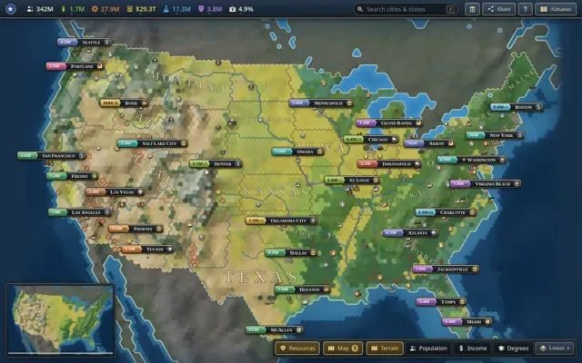
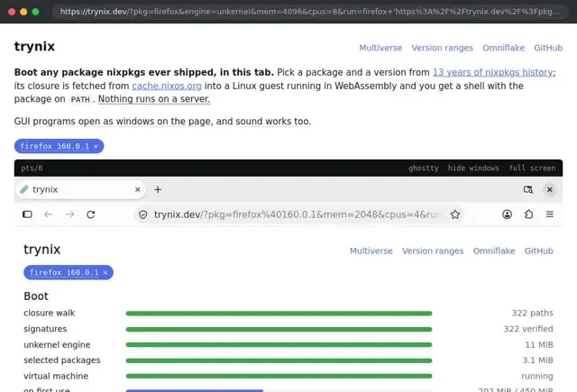
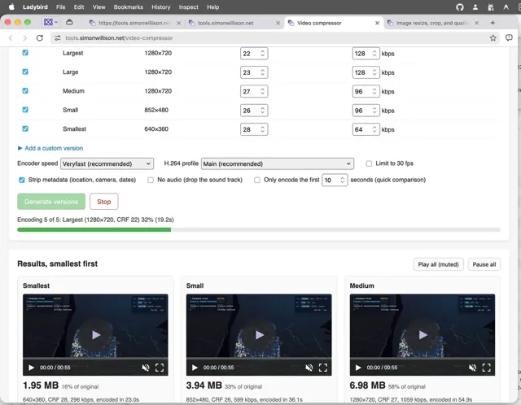
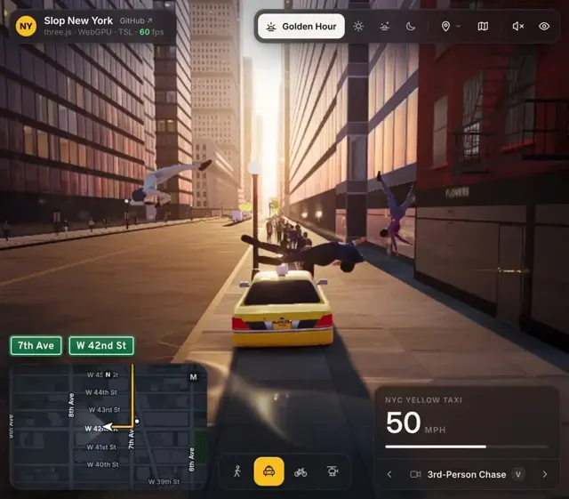
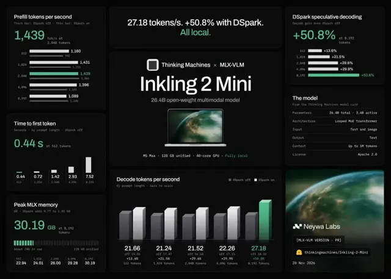
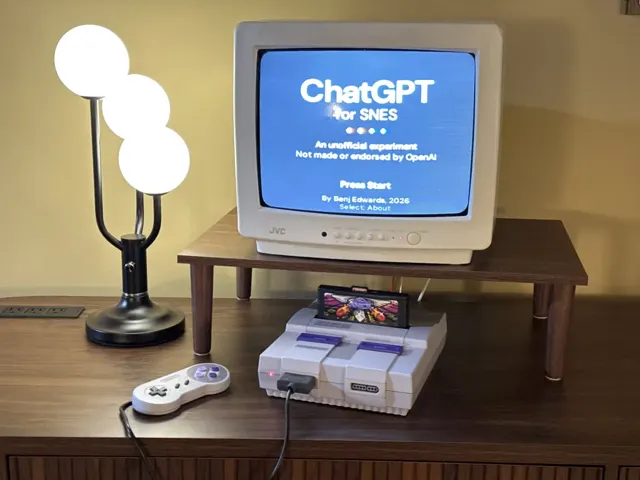
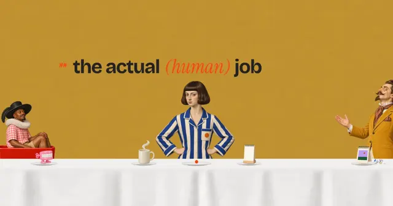
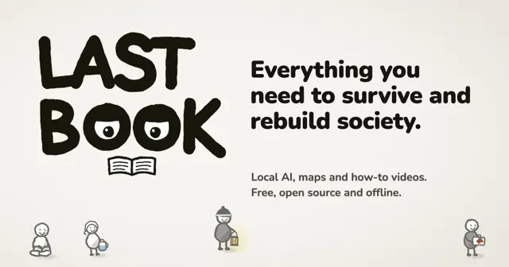

Andrej Karpathy asked Claude to populate a Civ-style game map with real public data: Census, BLS, NOAA, USGS, FAA and more, reconciled onto a 25 km hex grid with 19 lenses and a City View for 524 metros. Seven hours and 45K lines of code later, it's live at karpathy.ai/usaciv.

A Linux kernel compiled to WebAssembly now powers trynix.dev: pick almost any program Nix has ever packaged, and it boots in your browser with windows, OpenGL, sound and networking. No server runs your code; it all happens in the tab.

Every browser you use today runs on one of three engines. Ladybird built a fourth, from the ground up, and you no longer have to compile it yourself: there's a Mac download and Linux packages, with automatic updates.
Finn McKenty's video-distortion app went viral with a new “Windows 95 CD-ROM” mode built on the actual old codec. It's MIT-licensed, has a command line and an MCP server, and a new release dropped overnight.

Ricardo Cabello (mrdoob), who created three.js, keeps adding features to Slop New York: a WebGPU city you can drive, fly a camera through, and teleport around, from the Empire State Building to Manhattanhenge.

Thinking Machines, the lab started by ex-OpenAI CTO Mira Murati, released Inkling 2 Mini with open weights. It re-runs part of itself three times per token to “think” without writing more, and people are already running it on MacBooks and gaming PCs.

Tech journalist Benj Edwards had AI agents build an unofficial “ChatGPT for SNES”: a 2.2-million-parameter model that runs on the Doom-era Super FX 2 chip and types its answers one word at a time. It's often wrong, and that's half the fun.
Several research teams independently found memory bugs in NGINX's HTTP/2 code that let a stranger run code on the server. One works on a plain static-file setup. Patched releases came out yesterday.

Produce-headed dinner guests, scroll-triggered animations and one big question: what is a designer for when AI can make the average website in seconds?

A free desktop app that packs survival guides, maps, how-to videos and a local AI chatbot. Once it's downloaded, it all works with the internet off.